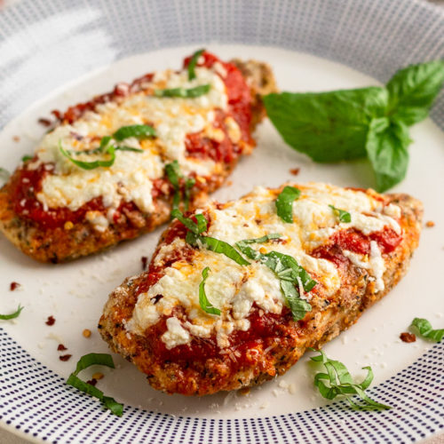

Home
Chicken Parmigiana

Source: image from Eat the Gains.
Description
Chicken Parmigiana (or Chicken Parmesan) – the great pub favourite has finally landed! Pollo alla parmigiana in Italian, but affectionately referred by Aussies as Parma, Parmi or “a schnitty with tomato sauce and cheese”, you’ll love this homemade recipe with extra crispy schnitzel, best ever parmigiana sauce and juicy marinated chicken.
Source: recipetineats
Ingredients
- Chicken breast.
- Salt and pepper.
- Italian mixed herbs.
- Eggs.
- Tomato passata.
- Garlic and onion, finely chopped.
- Chilli flakes.
- Bread crumbs.
- Parmesan cheese.
Source: Adapted from recipetineats
Steps
- Take chicken breast and fillet into two halfs.
- Add salt and pepper and Italian mixed herbs to chicken breast.
- Beat eggs, add garlic and italian herbs into the mixture and crumb chicken breast.
- Fry or bake the crumbed chicken breast
- Place crumbed chicken breast of baking tray.
- Top chicken with tomato passata, onion and parmesan cheese.
- Bake until cheese is melted.
Source: Adapted from recipetineats
Top